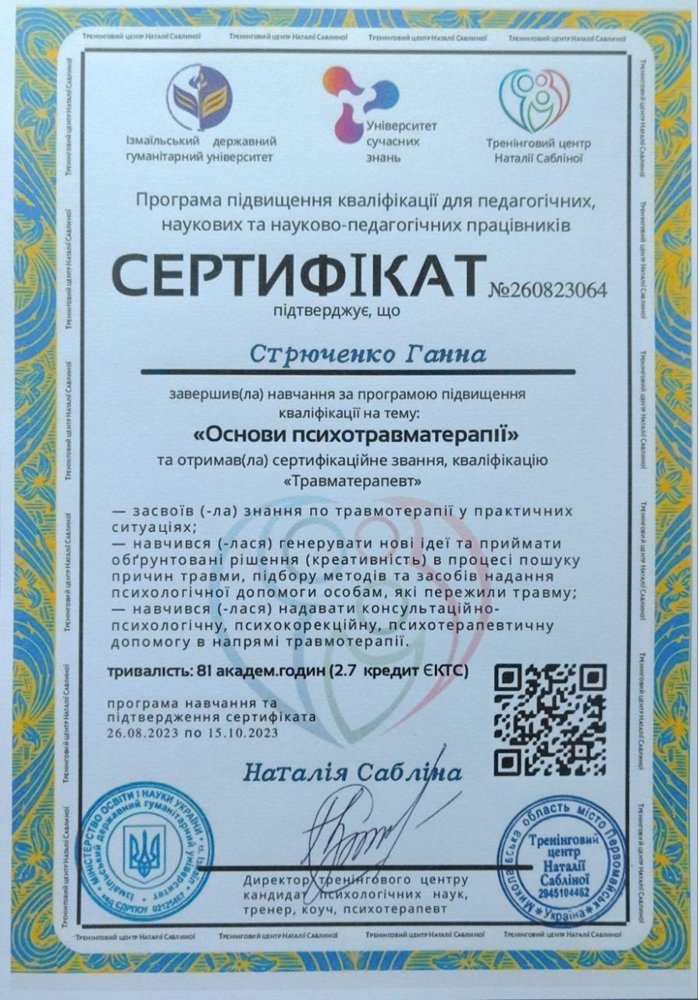
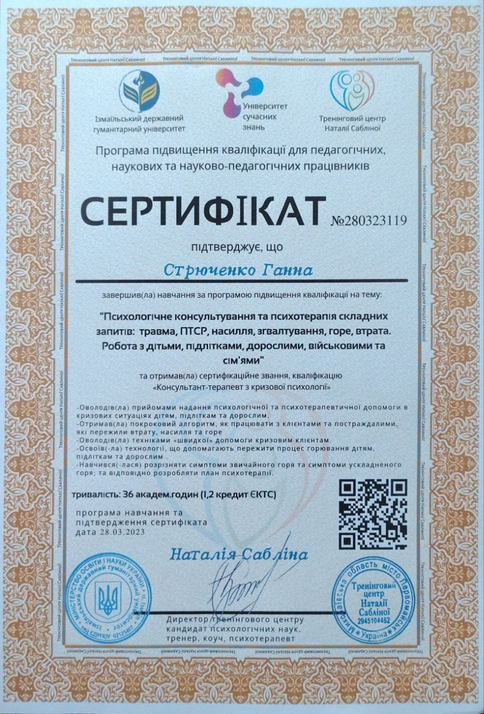

Мій підхід
У роботі для мене важливі уважність до людини, безпечний контакт, практичність і ясність. Формат підтримки підбирається під запит: індивідуальна консультація, триваліший супровід, груповий чи навчальний формат.
Запоріжжя та онлайн
Ганна Юріївна Стрюченко — психолог. Проводжу індивідуальні консультації в Запоріжжі офлайн та онлайн. За попередньою домовленістю можливі групові зустрічі та виїзні формати. У роботі поєдную базову психологічну освіту, сучасні навчальні програми та практичний підхід до підтримки людей у складних життєвих обставинах.
Про мене
У роботі для мене важливі уважність до людини, безпечний контакт, практичність і ясність. Формат підтримки підбирається під запит: індивідуальна консультація, триваліший супровід, груповий чи навчальний формат.
У 2009 році закінчила Запорізький національний університет за спеціальністю «Психологія» та здобула кваліфікацію психолога. Додатково проходжу регулярне навчання і підвищення кваліфікації в сучасних напрямах психологічної допомоги.
Працюю в Запоріжжі офлайн та онлайн. За попередньою домовленістю можливі групові зустрічі, тематичні заходи та виїзні формати в інших містах.
Напрями підготовки
Додаткове навчання з психологічного супроводу тривожних станів, роботи зі стресом та відновлення внутрішньої опори.
Підготовка у темах психотравми, кризових запитів, втрати, ПТСР, насильства та психологічного супроводу в складних обставинах.
Окремі програми з підліткової психології, когнітивно-поведінкової моделі в роботі з дітьми та підлітками, а також освітніх безпечних просторів.
Навчання з арт-терапії, сімейного консультування, співзалежності, психосоматики, медіації та комунікації в складних ситуаціях.
З якими запитами можна звернутися
Коли складно заспокоїтися, з’являється постійне напруження, страхи, перевантаження думками або тривожні стани.
Коли сил стає менше, накопичується перевтома, важко відновлюватися, а звичні справи починають забирати занадто багато ресурсу.
Коли важко прожити наслідки подій, втрату, шоковий досвід, небезпеку чи довгий період внутрішньої нестабільності.
Коли боляче в близьких стосунках, є конфлікти, складно вибудовувати межі, чути себе або виходити з повторюваних сценаріїв.
Коли потрібен дбайливий супровід для дитини чи підлітка, а також підтримка для батьків у складних або чутливих ситуаціях.
Коли життя змінилося, потрібно знайти нову опору, пройти етап невизначеності й м’яко відновити відчуття стабільності.

Практика і професійність
Диплом психолога, Запорізький національний університет, 2009 рік.
Арт-терапія, підліткова психологія, тривожні стани, психотравматерапія, співзалежність, когнітивно-поведінкові моделі.
Індивідуальні консультації, групові зустрічі, виїзні формати та навчальні програми за запитом.
Освіта і кваліфікація
Запорізький національний університет, спеціальність «Психологія», кваліфікація психолога, 2009 рік.
Арт-терапія: теорія і практика, підліткова психологія, супровід тривожних станів, психологічна підтримка при синдромі подразненого кишечника, созалежність, Problem Management Plus.
Психотравматерапія, кризове консультування, робота з травмою, ПТСР, насильством, підготовка з безпечних просторів, військової психології та роботи з людьми у складних життєвих обставинах.
Сімейна арт-терапія, дитяча арт-терапія, медіація, профілактика насильства, навчальні програми для освітнього середовища та соціально-психологічних служб.
Сертифікати


Основний диплом психолога та свідоцтво про шлюб, яке підтверджує зміну прізвища з Шульга на Стрюченко.

Психологічний супровід тривожних станів і розладів як окремий напрям додаткової професійної підготовки.

Підготовка з роботи з психотравмою та сертифікаційним знанням травматерапевта.

Навчання з консультування і психотерапії складних запитів: травма, насилля, втрата, ПТСР, робота з дітьми, підлітками та сім’ями.

Спеціалізація з арт-терапії в роботі з дітьми та підлітками, 160 академічних годин.

Курс-спеціалізація з арт-терапії в сімейному консультуванні з присвоєнням спеціалізації сімейного арт-терапевта.

Поглиблене навчання з когнітивно-поведінкової моделі для психологічної роботи з дітьми й підлітками.

Практико-орієнтований курс з використання метафоричних карт у тренінговій та консультативній роботі.

Курс із дитячої психосоматики, психосоматичних розладів у дні війни та психолого-діагностичної гри «Психосоматика».

Практико-орієнтований курс для психологів про співзалежні відносини та особливості консультування в цій темі.

Психологічна допомога та робота психолога з військовими й їхніми родинами у дні війни.


Членський квиток ГО «Інститут розвитку практичної психології» як підтвердження професійної належності та участі в спільноті.

Курс про кроки до порозуміння, дієві інструменти медіації та комунікації у складних ситуаціях.

Підготовка з медіації та шкільної служби розв’язання конфліктів.

Триденний тренінг з розвитку навичок протидії булінгу для представників педагогічних колективів.

Підвищення кваліфікації з теми запобігання та протидії булінгу в закладах освіти в умовах війни.

Навчання з теми опитування дітей, які стали жертвами або свідками насильства, а також вчинили насильство.

Тематичний тренінг у рамках проєкту покращення доступу до соціальних послуг в Україні.

Програма «ПОРУЧ» з технік зцілення для батьків, осіб, що їх замінюють, та спеціалістів, які працюють з дітьми.

Підвищення кваліфікації за темою психологічно-емоційної підтримки дітей у кризових обставинах.

Міжвідомчі мінімальні стандарти щодо гендерно зумовленого насильства в надзвичайних ситуаціях.

Курс про коректне реагування на розкриття випадків гендерно зумовленого насильства.

Навчання з попередження сексуальної експлуатації та зловживань у гуманітарному середовищі.

Базовий стандарт надання гуманітарної допомоги як частина сучасної професійної етики і практики.

Програма з публічної комунікації, коучингової взаємодії та змістовного проведення сесій.

Сертифікат семінару-тренінгу для неповнолітніх у конфлікті з законом.

Тренінг з мотиваційного інтерв’ювання в роботі з неповнолітніми у конфлікті з законом.

Навчальна програма з теми профілактики сексуального насильства серед підлітків.

Тренінг для тренерів про безпечну міграцію, працевлаштування та попередження торгівлі людьми.

Семінар-консул з теми аутизму в світі та Україні.

Англомовна версія сертифіката спеціалізації з дитячої та підліткової арт-терапії.

Проходження групової супервізії у контексті психосоціальної підтримки та роботи з конфліктами.

Англомовна версія сертифіката зі спеціалізації в сімейній арт-терапії.

Участь у міжнародному фестивалі арт-терапії як частина професійного розвитку.

Додаткові сертифікати участі у міжнародному фестивалі арт-терапії.

Сертифікати участі як тренера у регіональних фестивалях психології та розвитку.

Диплом за активну участь у фестивалі практичних психологів і соціальних педагогів.

Свідоцтво про підвищення кваліфікації та детальний перелік опрацьованих тем.

Онлайн-курс про безпечну сексуальну освіту, комунікацію і критичне мислення.

Курс FranklinCovey у межах програми «Лідер у Мені», модуль 2.

Вебінар про причини виникнення суїцидальної поведінки та алгоритми подолання.

Електронний курс з конфлікт-менеджменту та миробудування.

Дистанційний курс про запобігання булінгу в закладах освіти.

Навчання за програмою, спрямованою на інклюзивне освітнє середовище та підтримку дітей.

Віртуальний фестиваль практичних психологів і соціальних педагогів.

Семінар-практикум від ГО «Флоренс» щодо реформування системи освіти.

Ефективна комунікація в педагогічній діяльності та базові навички медіатора шкільної служби порозуміння.

Посвідка про участь у ІІ Національному антибулінговому уроці.

Відзнака управління соціального захисту за внесок у вирішення проблем соціального захисту громади.

Відзнака за внесок у реалізацію програми «Лідер у Мені».

Поглиблене навчання в межах програми підвищення кваліфікації педагогічних працівників.

Офіційний статус локального тренера програми у Запорізькому академічному ліцеї «Вибір».

Розгорнуте свідоцтво з описом змісту навчальної програми та результатів.

Окреме фото сертифіката практико-орієнтованого курсу зі співзалежності.

Зворотній бік основного диплома з реквізитами документа.

Додатковий документ із присланого пакета матеріалів у форматі зображення.

Окремий документ із матеріалами щодо сертифіката від ГО «Флоренс» у форматі зображення.
Формати роботи
Офлайн-зустрічі в Запоріжжі для індивідуальної психологічної підтримки та роботи із запитом у комфортному форматі.
ОфлайнПідходять для людей з інших міст або для тих, кому зручніше працювати дистанційно в індивідуальному темпі.
Zoom / Google Meet / інший узгоджений форматМожливі групові зустрічі, тематичні заходи та виїзд в інші міста за попереднім узгодженням формату роботи.
За попереднім узгодженнямЯк проходить робота
Напишіть у Telegram або на email: коротко опишіть запит і бажаний формат роботи.
Разом визначаємо, що підходить саме вам: офлайн у Запоріжжі, онлайн чи виїзний формат.
Після узгодження формату домовляємося про консультацію, групову зустріч або інший зручний формат роботи.
«У роботі для мене важливі професійність, етика, делікатність і повага до особистої історії кожної людини».
Принцип роботи«Індивідуальні консультації та групові формати будуються на ясності, безпеці контакту та повазі до запиту людини».
Формати роботиВартість консультацій
≈ 950 грн
Підходить, якщо вам зручніше працювати дистанційно у спокійному індивідуальному форматі.
≈ 1100 грн
Особиста зустріч у Запоріжжі для глибшого контакту, уважної присутності та роботи із запитом у комфортному темпі.
За домовленістю
Вартість групових і виїзних форматів узгоджується окремо залежно від задачі та формату роботи.
Відгуки
«У мене покращився настрій, з’явилося бажання жити й радіти життю. Я звільнилася від нав’язливих думок, побачила сенс рухатися далі без зайвих перешкод. Дуже вдячна Ганні за підтримку, розуміння, дбайливе ставлення та чутливість».
«Ганна дуже добра, уважна й чутлива. Вона вміє вислухати, підтримати, заспокоїти, допомогти зібратися та повірити у власні сили, щоб продовжувати жити далі».
«Хочу подякувати психологу Ганні за підтримку, моральну допомогу, арттерапевтичні заняття, увагу та піклування. Ганна навчила мене триматися, правильно дихати, щоб заспокоїтися, і не розгубитися в найнесподіваніших ситуаціях».
«Дякую Ганні за роботу та консультацію, а також за результат, який я отримала. Я змогла краще зрозуміти себе, свою доньку, свої бажання та потреби. Отримала відповіді на свої запитання. Консультація пройшла в атмосфері довіри та на високому рівні».
«Я зрозуміла, як важливо мати поруч таку підтримку. Ви допомогли мені знайти сили та спокій, пройти важкий період у моєму житті. Ваша турбота — це більше, ніж просто допомога».
«Дякую Ганні за те, що навчила вірити у свої сили та розуміти свої почуття. Саме ця підтримка допомогла пройти найскладніший період мого життя».
«Дякуємо психологу Ганні за увагу до нас. Вона навчила нас, як дбати про себе, а також вправам на дихання та заземлення. Ці техніки дуже заспокоюють у важкі хвилини».
«Дякую Ганні за підтримку і за те, що вона вміє вислухати без осуду. Ми робили дихальні вправи, працювали з негативними думками. Після спілкування я відчула внутрішній спокій і навчилася краще справлятися з тривогою».
«Тендітна, щира, з великими сіро-блакитними очима — це людина, яка принесла світло й яскраві барви в мою непросту реальність, допомогла розібратися в багатьох життєвих ситуаціях. Дуже вірю, що наші зустрічі триватимуть і далі. Вона залишила глибокий слід у моєму серці».
Запис
Можливий виїзд в інші міста
Групові та виїзні формати за попередньою домовленістю
У заявці можна обрати Telegram, Viber, WhatsApp, телефон або email
Поширені питання
Консультації можливі в Запоріжжі офлайн та онлайн. Формат підбирається залежно від запиту, міста та ваших можливостей.
Так, за попередньою домовленістю можливі виїзні консультації, групові зустрічі та інші формати роботи в інших містах.
Так. Уже зібрано диплом психолога та велику добірку сертифікатів з арт-терапії, тривожних станів, підліткової психології, психотравматерапії, кризового консультування та суміжних напрямів.
Найзручніше — через Telegram @annastryuchenko або через форму на сайті, де можна обрати Telegram, Viber, WhatsApp, телефон чи email для зворотного зв'язку.
Запис і співпраця
Якщо вам відгукується мій підхід, залиште заявку у зручному для вас форматі. Разом погодимо консультацію або інший доречний формат роботи.